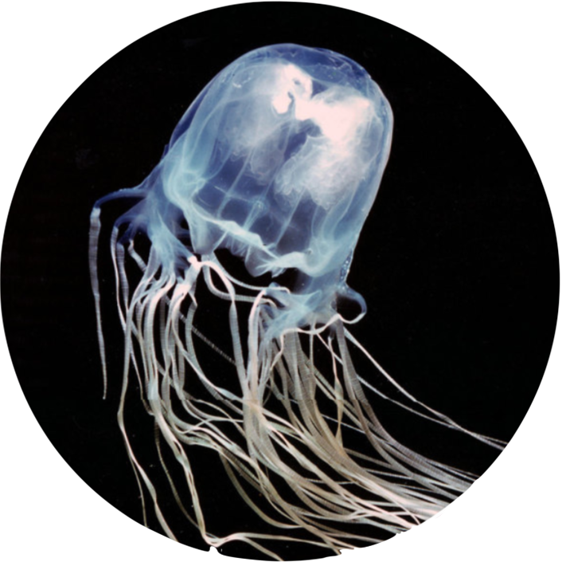
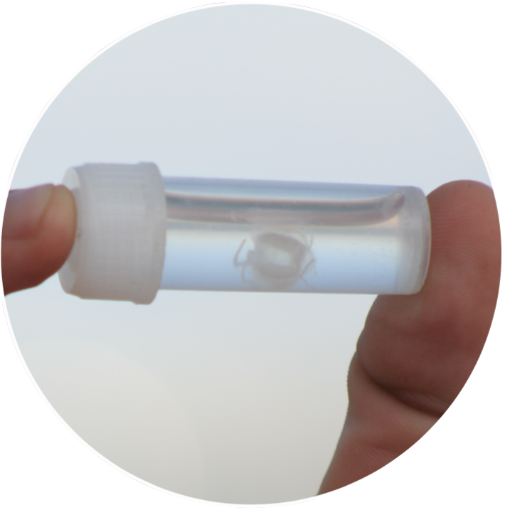
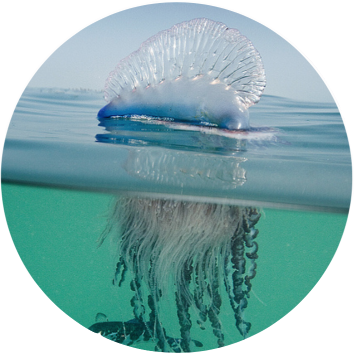
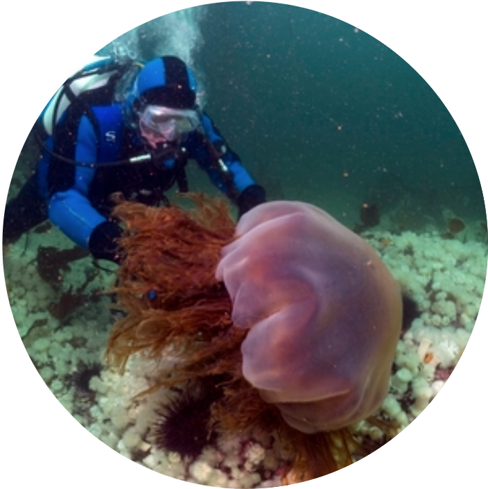
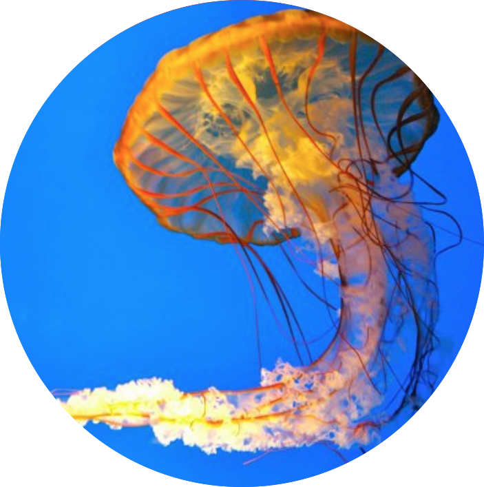

|  |
| 1. Box Jellyfish (Chironex fleckeri) |
| It seems to go without saying that the most poisonous, deadliest and meanest of all the jellyfish inhabits Australia. The variety of box jellyfish known as the sea wasp or marine stinger is widely regarded as one of the most deadly creatures on earth. Along with other box jellies they have been responsible for at least 5,568 deaths recorded since 1954. The Australian variety causes around 1 death a year on average with a further 100 in South East Asia.
As with so many of the deadliest animals it is said that from certain angles there are skull-like marking – in this case on the largely transparent bell. The 15 tentacles can reach up to 3 metres (10 ft) long and each is covered in around half a million venom infused, microscopic darts. It is estimated that each animal contains enough venom to kill 60 adult humans. The venom acts fast too and it can kill within minutes causing cardiovascular collapse. It also attacks the nervous system and skin cells. The actual sting has been compared to being branded with a red hot iron. It is said that the pain can be so severe that it may result in shock leading to drowning or heart failure on its own. Whilst stings are often survived pain can continue for weeks and there may be permanent scarring resembling whip marks across affected areas. With 24 eyes, four brains and an impressive 60 anal regions (whatever they are) the box jelly fish are definitely an advanced and formidable creature. |
|  |
| 2. Irukandji Jellyfish (Carukia barnesi) |
| What the Irukandji jellyfish lacks in size it makes up for in the power of its venom. The name is derived from the Irukandji people of North Australia, as this is where the jellyfish was first observed. However, it appears to be much more widespread than this with specimens allegedly found as far away as the British Isles.
Measuring only 5mm (0.2 ins) across and with tentacles less than 1 metre (3 ft) it is one of the smallest members of the box jellyfish family. The venom though is insanely powerful; it is reputedly the most venomous animal toxin on earth, over 100 times more powerful than that of the cobra. In addition to this the Irukandji Jellyfish is unique in having stingers on its bell as well as tentacles. The only reason this critter isn’t at the top of the list is its small size. Despite this the sting is without doubt potentially lethal. Often one sting will not kill as long as appropriate treatment is given. In non fatal stings Irukandji syndrome may develop with delightful symptoms such as excruciating muscle cramps, severe pain in the back and kidneys, burning sensation of the skin and face, vomiting, headache and increased heart rate. Victims have also described a ” feeling of impending doom”. The good news is that apparently, the sting itself isn’t too painful! |
|  |
| 3. Portuguese Man o’ War (Physalia physalis) |
| Strictly speaking the Portuguese Man o’ War, or bluebottle, is not a true jellyfish. It isn’t actually even a single animal. It is actually a whole colony of organisms working together in peace and harmony. The name comes from the air filled bladder that acts as a float and sail – this was thought reminiscent of the 17th century naval ships called men-of-war. I think the Portuguese bit also comes from the ship – I lived in Portugal for a while and never saw any of these critters.
In Australia they call it a blue-bottle because it’s blue. The Man o’ War is found throughout the oceans of the world and has been sighted as far north as Scotland, thanks largely to the warm waters of the Gulf Stream. The sting of the Portuguese Man o’ War is both serious and common with up to 10,000 stings per annum in Australia alone. The sting itself is characterised by a painful raised whip-like welt across the skin. These can last from an hour to several days. The main risk is from systemic effects of the venom. In severe cases intense pain followed by fever, shock, and impaired heart and lung function leading to possible death may occur. |
|  |
| 4.Lion’s Mane Jellyfish (Cyanea capillata) |
| Strictly speaking the Portuguese Man o’ War, or bluebottle, is not a true jellyfish. It isn’t actually even a single animal. It is actually a whole colony of organisms working together in peace and harmony. The name comes from the air filled bladder that acts as a float and sail – this was thought reminiscent of the 17th century naval ships called men-of-war. I think the Portuguese bit also comes from the ship – I lived in Portugal for a while and never saw any of these critters.
In Australia they call it a blue-bottle because it’s blue. The Man o’ War is found throughout the oceans of the world and has been sighted as far north as Scotland, thanks largely to the warm waters of the Gulf Stream. The sting of the Portuguese Man o’ War is both serious and common with up to 10,000 stings per annum in Australia alone. The sting itself is characterised by a painful raised whip-like welt across the skin. These can last from an hour to several days. The main risk is from systemic effects of the venom. In severe cases intense pain followed by fever, shock, and impaired heart and lung function leading to possible death may occur. |
|  |
| 5. Sea Nettle (Chrysaora) |
| The Sea Nettles are common on both coasts of North America. They are probably best known around the Chesapeake Bay are of on the US East coast. Here they aggregate to forming huge blooms (that’s the technical term for a bunch of jellyfish) during the summer months becoming a menace to swimmers.
The sea nettles are large jellyfish reaching up to 1ft (30cm) across. They have 24 tentacles which can measure well over 6ft (2m) in length and it is on these that the infamous stingers reside. The sting from a sea nettle can be extremely painful and leave a painful rash on the skin for around an hour. They are not generally dangerous though and medical assistance is very rarely needed. Reports of stings from more exotic Chrysaora species have been more serious. |
Fun Facts